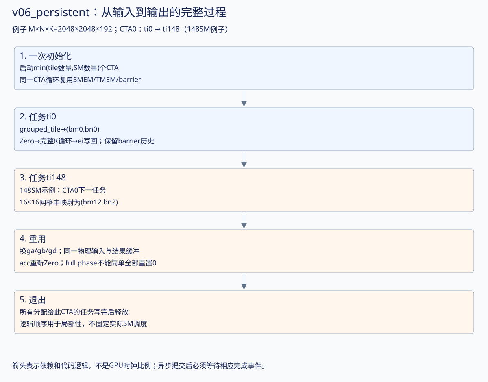
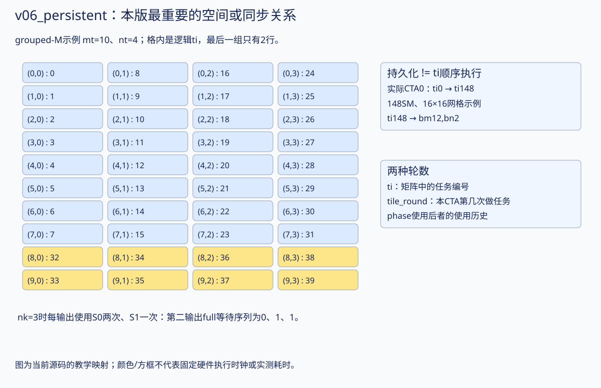

启动数量限制在SM数以内，不再为所有输出tile各启动一个新CTA。CTA i处理逻辑tile i、i+gridDim.x、i+2*gridDim.x……，在一个kernel里复用TMEM分配和共享资源。
一个逻辑tile编号还必须映射到二维(bm,bn)。最终代码按原书使用M方向8行一组的顺序：先在一组M tiles内部递增，再换N column；处理完该组所有N columns后再进入下一组M。这样更接近地访问共享B的任务，也限制A的复用距离。这只改变任务编号，并不保证硬件严格按编号执行。
持久化跨越多个输出tile后，barrier phase不能每个tile都重新设0。尤其K/64是奇数时，两份buffer在一个tile内使用次数可能不同。代码为每个stage计算历史使用轮数，避免等待旧一轮的完成状态。
从上一版走到本版：完整图解
先读：上一版 · 下一版。本版重点：CTA0：ti0 → ti148（148SM例子）。下方保留完整逐行代码，先用图和具体例子建立整体过程，再对照行号。
| 量 |
本版的具体含义 |
| 合作输出任务 |
128×128；每consumer的MMA输出128×128 |
| CTA组大小 / 线程 |
1 CTA；每CTA 128线程 |
| 输入stage / consumer |
2 stage；1个MMA consumer（v07起为独立MMA角色） |
| 每CTA输入/输出SMEM数据 |
输入64KiB；输出缓冲16KiB；barrier、字段及对齐另计 |
| 每CTA TMEM |
128列，即128×128个32-bit单元 |
| 教学例子的M×N×K |
2048×2048×192；不改变下方已有实测尺寸与数据 |

1. CTA 不再等于一个输出 tile
v05有多少输出tile就启动多少CTA。v06启动 grid=min(tile数量,SM数量) 个CTA；每个CTA循环领取固定序列：
CTA blockIdx.x=b：ti=b, b+gridDim.x, b+2×gridDim.x, ...
这叫持久化工作循环。ti是逻辑任务编号，tile_round是当前CTA已经处理过几个输出任务；二者不相同。
本机148SM、M=N=2048时，mt=nt=16，总256个输出tile，启动148个CTA。CTA0处理ti=0和148；CTA107处理107和255；CTA108以后只处理一个任务。这是本机配置下的具体例子，不保证CUDA把CTA编号直接绑定到同编号SM。
2. grouped_tile 怎样把 ti 换成 bm/bn？
按8行M tile分组，先在组内沿M走，再换N列。用小网格mt=10、nt=4看编号顺序：
ti 0..7 → (bm=0..7,bn=0)
ti 8..15 → (bm=0..7,bn=1)
...
ti 24..31 → (bm=0..7,bn=3)
ti 32,33 → (8,0),(9,0) ← 最后一组只有2行
ti 34,35 → (8,1),(9,1)
源码中的 rows=min(8,mt-base) 必须按最后一组剩余行数计算；不能所有组都写死8。
回到上面的16×16网格：ti=148时，group=1、base=8、local=20，得到bm=12、bn=2。CTA0的第二项输出是D[1536:1664,256:384]，不是简单的“第148行”。
3. 一个 CTA 的资源怎样跨任务留下来？
申请TMEM/初始化barrier（只一次）
任务ti0：重新建立ga/gb/gd → acc模式Zero → 完整K循环 → 全部ei写回
任务ti148：换窗口但复用原SMEM/TMEM → Zero → 完整K循环 → 写回
退出工作循环后再释放TMEM
sa/sb所在的两套物理数组不变；ga/gb/gd的矩阵起始坐标改变；acc绑定同一TMEM空间但代表新的输出。每个新输出必须重新设Zero，不能把上一输出的结果继续累加进来。
本版任务之间仍按代码顺序完成写回，没有独立epilogue与下个任务MMA并行；下一任务使用TMEM之前，上一个输出已经处理完。
4. 奇数 nk 为什么特别容易把 phase 算错？
取K=192，nk=3。每个输出从stage0开始：stage序列0、1、0。所以每个输出使用stage0两次、stage1一次。
等待full的源码公式：
uses_per_output(stage) = floor((nk+S-1-stage)/S)，S=2
phase = (tile_round×uses_per_output(stage) + floor(kt/S)) & 1
| tile_round |
kt |
stage |
该stage此前使用次数 |
full phase |
done phase |
| 0 |
0 |
0 |
0 |
0 |
0 |
| 0 |
1 |
1 |
0 |
0 |
1 |
| 0 |
2 |
0 |
1 |
1 |
0 |
| 1 |
0 |
0 |
2 |
0 |
1 |
| 1 |
1 |
1 |
1 |
1 |
0 |
| 1 |
2 |
0 |
3 |
1 |
1 |
done_phase跟随每个K64 MMA批次连续翻转；full按各自stage的使用历史翻转。第二个输出第一次用stage1时等待phase1，不能重新从0开始。
5. stage 与布局不会自动跟 ti 绑定
本版每个新输出的kt重回0，stage也重回0；但barrier的历史并未清空。和v07的差别是：v07使用跨输出连续的iteration来选stage，未必每个输出从stage0开始。
对CTA0第二个任务中A[1539,82]：bm=12、kt=1，ga(3,18,1)与pa((3,2),0,1,1)指向该源，目标为stage1；tile_round=1使其full等待phase1。
6. 复用、局部性和调度保证
grouped-M让相邻逻辑任务更近地访问相同B，并限制A复用距离，期望提高缓存复用。它没有创建跨CTA共享SMEM，也不保证硬件严格按ti顺序执行。 持久化减少重复的CTA级资源准备，但是否提速仍取决于串行等待、负载均衡和问题规模。
复习：tile_round能直接用ti吗？ 不能。CTA0第二次做ti148时round是1；phase依赖这份barrier实际经历了多少轮，而不是矩阵中的任务编号有多大。
本版机制放大图

如何核对这份讲解
对应本页链接的 .cu 源码；CuTe 单/双CTA分片和宽/窄load的坐标核对见 layout诊断，可运行 ./scripts/check_later_layouts.sh 复现。它在B300上用单个GPU线程检查CuTe identity tensor的坐标与分片形状，不执行MMA或TMEM数据读写。时间图只表达依赖；本轮完善文档不修改kernel，不把新增布局检查当作新的性能测量。已有正确性与性能数据仍见页面后半部分。